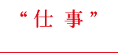
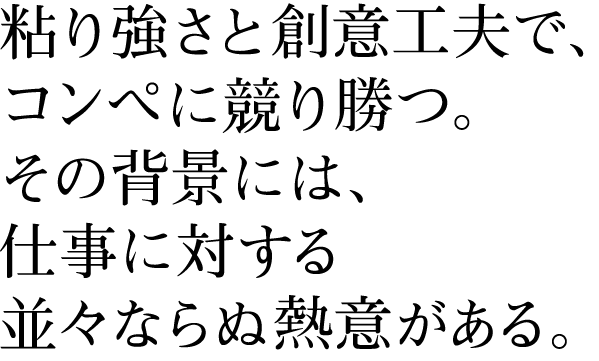
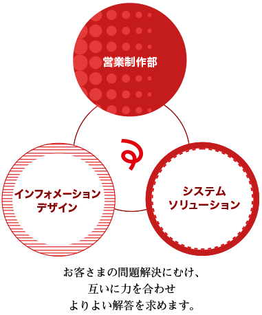

大手製薬会社や不動産会社など多くの企業をお客さまに持ち、
Webサイトの企画から制作、運用に至るまで一気通貫型のソリューションを提供しているアリスマジック。
日々の仕事内容と、それぞれの仕事に必要な力についてご紹介します。

システムY
システムソリューションズグループ／シニアエンジニア
2004年入社。システムソリューションズグループのリーダーとして、チームを率いる。豪快かつ温かい性格で、後輩たちに慕われている。
デザインN
インフォメーションデザイングループ
2008年に中途入社。コンペで大きな案件を獲得するなど、活躍が目覚ましい。仕事が円滑に運ぶよう、日頃から社内外の人への配慮を怠らない。
営業S
営業制作部
2007年に新卒入社。新卒組としては中堅の位置づけ。「後輩たちが余計な苦労をしないように」と心配りをする、面倒見の良い兄貴分な一面も。
- 営業S：
- 営業制作部の仕事は、
①お客さまが抱えている問題を発見して整理すること。
②デザインチーム、システムチームのメンバーと相談しながら解決策を導き出すこと。
③解決策を実行して成功へと導くこと。
営業といっても商談をしたり、受注を獲得するばかりが仕事ではありません。カバーする範囲はとても広いですね。 - デザインN：
- インフォメーションデザイングループの仕事は、
①デザイン面から要件定義に関わること。
②画面設計・デザイン制作を行うこと。
③制作物についてお客さまに説明すること。
インフォメーションデザイングループという名前の通り、「情報デザイン」の専門家としてトータルにプロジェクトに関わるため、仕事はデザイン制作だけに留まりません。 - システムS：
- 営業制作部の仕事は、
システムソリューションズグループの仕事は、
①システム面から要件定義に関わること。
②設計を行うこと。
③開発をすること。

- 営業S：
- 次に、営業制作部に必要な3つの力をお伝えします。1つ目は「解決策をロジカルに示す力」。自分たちが練り上げた解決策を、筋道を立ててお客さまに説明する力です。2つ目はお客さまや社員、家族など「周囲とコミュニケーションする力」。特に家族とのこまめなコミュニケーションは、仕事を充実させるには大切なことだと思っています。3つ目は「最後までやり切る力」。営業制作部の僕たちはプロジェクトの責任者なので、「必ず結果に結びつけるぞ」という気合いが必要です。
- デザインN：
- 私からは、インフォメーションデザイングループに必要な3つの力をお伝えします。1つ目は「ヒアリング力」。言葉の奥にある真意を汲み取る力が求められます。例えば「この部分を赤くしてください」とお客さまから指示があった場合、赤くしたいというよりも「目立たせたい」ことが真意であるケースがありますから。2つ目は「デザイン力」。3つ目は「説明力」。自分の制作物が、何故お客さまの問題を解決するのかを説明できること。私は入社当時、「ドカーンとしてキラキラな感じで」のような感覚的な話し方をしていました。でも、それでは相手に伝わらない。試行錯誤を繰り返すうちに、段々と説明力が身についてきました。
- システムS：
- システムソリューションズグループに必要な力は、「合わせる力」。システムというとどうしても専門用語が多くなりますが、私たちが関わっているのはあくまで一般の方。相手を置き去りにして突っ走ってしまっては、何の意味もありません。だから、自分が理解していることであっても相手もそうだとは限らないと肝に銘じ、相手の理解度に合わせて会話のキャッチボールをする必要があります。特に初対面では、信頼関係を築く上でとても重要です。
- 営業S：
- アリスマジックは規模の小さな会社ですが、社員数千人以上、売上数千億円規模の大企業とのお付き合いも多いです。営業としてお客さまの皆様と接する中で、大企業で働く人たちの仕事観や働き方を肌で知ることができます。お客さまに教えていただくことも多く、とても恵まれた環境にいると思いますね。
- デザインN：
- アリスマジックは、数年前からお客さまを製薬系企業に絞り込んでいます。その甲斐あって、私たちの存在が業界内で認知されるようになってきました。この前もコンペに参加したのですが、私たちの提案が評価され、見事競り勝つことができました。大手企業と違って、私たちの参加コンペ数は多くありません。だからこそ、一つひとつのコンペに対して、先方の提案依頼書を何度も読み込み、どうしたら課題を解決できるかをとことん考え、時間をかけて提案に盛り込んでいます。今回コンペに勝ったとき、ご担当者から「御社の熱意に打たれた」と言っていただきましたが、真剣さと丁寧さには自信があります！
- システムS：
- アリスマジックは、代理店を通さない直接取引が多いのが特長です。それは、お客さまの要望をきちんと引き出し、それを丁寧に形にする姿勢を何より重視しているからこそ。だから、達成感を感じる場面が多いし、つらいことがあってもモチベーションを保つことができるのです。
- 営業S：
- アリスマジックに入社する前は、自分の仕事を成功させる人がプロだと思っていました。でも今は、お客さまの仕事を成功させることができる人をプロと言うのだと思っています。
今後、僕たちの仕事力をさらに高めていくためには、今まで以上にチームワークを意識する必要があると思います。各分野のプロが力を合わせ、その相乗効果でクリエイティブな解を生み出していけたら最高です。 - デザインN：
- 入社してほしいのは、さまざまな分野に興味を持って挑戦できる人。好奇心旺盛でフレキシブル、チャンスを自分から掴みにいく人にとって、アリスマジックはチャンスに満ちあふれた会社ですよ。
- システムS：
- 同感です。加えて言うと、根性も大事。チャンスを掴みにいく際、1回や2回で諦めないこと。若い人には、失敗する権利があります。だから、失敗を怖れずに、根気よくチャレンジしていってほしいですね。